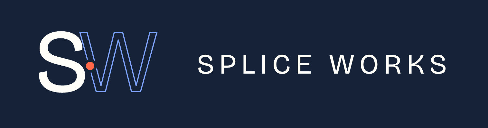
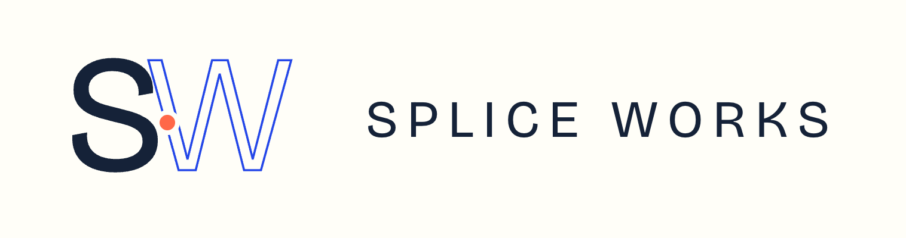

What it is, how it's built, and where it stands today.
A model that can read a database and misread it once is a demo. The same model with no audit trail, no approval gate, and no scoped access is a liability. Governance isn't a feature bolted on after the fact — it has to be the substrate agents run on.
Every harness Splice Labs or Splice Works builds runs on the same governed spine.
gates/*.yaml; nothing proceeds without explicit sign-off; resume tokens pick execution back up after approval.Every harness moves through the same gated sequence before it can touch a real system.
station-pack.yaml
Dry-run on real data
Proposes, doesn't act
Write access granted
Improves in place
The gates don't come off after go-live. They stay on, permanently — that's what makes the audit trail mean something.
Self-hosted by design. Station runs inside the customer's environment — not a shared multi-tenant control plane holding everyone's data.
Splice Labs and Splice Works run Station on their own workflows first.
One Station instance, harnesses repeated across portfolio companies.
Deployed inside the client's environment; the client supplies its own systems of record, Station supplies the governance layer.
Splice Works installs three things at every client: Splice Station, a scoped harness, and a client-specific brain. Station is the one layer that never gets rebuilt — it's Splice Labs IP, licensed into the deployment, not reinvented per client.
Builds Station + harness IP
Deploys it under governance, into real client operations
Station is a working runtime today — harnesses run, gates hold, the audit trail records every mutation. What's still ahead: a live MCP server as the primary agent interface, verified live connector integrations beyond the reference adapters, durable persistence, and production-grade auth.
This is a v0.2 runtime under active development, not a shipped product. This reflects the actual build plan, not aspirational marketing.

Splice Station is Splice Labs' governed harness runtime, deployed into every Splice Works engagement. Built once, hardened continuously, running everywhere Splice Works ships.
Individual harnesses may commoditize. The moat is the governance substrate, the portable harness library, and the compounding vertical intelligence underneath them.